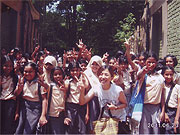
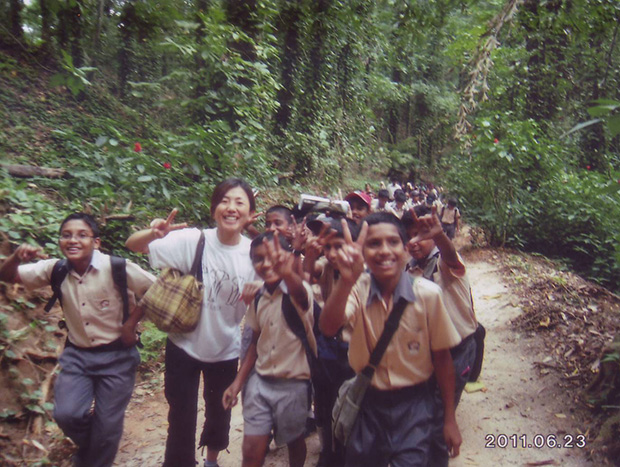

スリランカ文化がわかる結婚式♪ |
「私は40代で、初めてのホームステイデビューでしたが、ホームステイ先は、とても日本人を受け入れ慣れていたので、まったく問題はありませんでした。
食事は毎回違うものを出してくれ、とてもおいしく気をつかってくれました。
結婚式やお葬式、ボランティア、テンプルへも連れて行ってもらい、貴重な体験をさせてもらいました。
買い物も行ったし・・・。
案内に書いてある通りでしたので、まったく問題はないと思います。
英語レッスンは、私のレベルに合わせてくれました。 |
私がホームステイをしたワラカポーラという町には、スーパーも２軒あるので、食べ物も豊で日用品は何ももって行かなくても現地でそろいます。
スーパーの商品が充実しているので、発展途上国というイメージはないように思います。
町の治安もいいですし。
銀行も郵便局もありますし。町には歩いて１０分くらいなので、毎日の散歩に調度いいです。
日本人は住んでいないですが、のんびり過ごしたい方にはおすすめです。
停電はしょっちゅうあるので、自分で懐中電灯を持っていると便利かもしれません。
日本語教師ボランティアでは、『折り紙』がとても役に立ちました。
ぜひ作り方の本とあわせてもって行くことをおすすめします。
いくつか練習すればすぐ教えられます。
紙はノートや新聞紙で切ればいいですし。
簡単な唄や日本語を教えるだけでも十分喜んでもらえるので、そんな大した用意はいらないと思います。
日本の簡単な歌がとっさに出るようにするといいと思います。
その他、ハンディキャップの子供達への食事の提供、パブリックスクールでの折り紙授業、インターナショナルスクールでのピクニックや歌や折り紙、日本語ティーチャー等いろいろな体験をさせてもらいました。
子供達に関しては、とにかく元気！です。
みんなですぐ歌を唄い出します。
ネットもTVゲームもない子供達の遊びは『唄』なんですね。
ディーチャーも大声を出して大変です。 |
 子供達はとにかく元気！ |
低開発村視察では、女性の働く現場を見ました。
この国のvillageはまだまだ『女性＝仕事』には結びつかないようです。
今回が４回目のスリランカでした。
スリランカは行く度にどんどん治安が良くなっているようです。
どこの国でも同じですが、『人はみな同じ』ということです。
民族間の差別や格差はカルチャーとしてなくならないものかと思いますが、それを踏まえて、ブッデストが多数派の国、という認識を持って行くのがいいのではないでしょうか。
スリランカはとても古い国です。
古くからの文化は今までもこれからもそう変わることはないと思います。
日本人としてスリランカ人が日本に憧れる気持ちや日本人に何かをして欲しい気持ちもわかります。
でも私たち日本人はあくまでもフェアに同じ人間としてこの国の人々とお付き合いできるといいですね。
日本に追いつくのは、５０年後くらいでしょうか‥。
参加する前に一度、担当の方とお会いできたので、不安なことは、特にありませんでした。
現地受入団体のマーネルさんは、日本に住んでいたので、日本人の好みをとても良く知っているので、良かったです。

スクールのピクニックに参加☆ |
滞在中は、自分の時間はたっぷりありますね。
私は折り紙とドローイングで時間をつぶしました。
あと、友人に手紙を書いたり、毎日の食事や買い物をスケッチしたり・・・。
若い方でしたら、ブログの更新ができるのですよね。
自分の時間をゆっくり楽しむのが私にとってのホームステイでした。
また、５～６年くらいしたら、ふとスリランカに行ってみるかもしれません。
１週間くらいどこかの家庭でお世話になるのもいいかもしれません。
その時は、よろしくお願いいたします。
|
P.S. 子育てや会社勤めを終えた人にこそ、ホームステイのチャンスを！！
ありきたりのパックツアーでは感じることのできない一人ステイにぜひ参加して欲しいです！！」
|